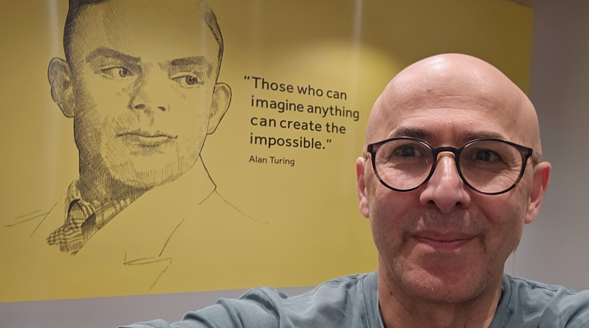

Arithmetics and Algebra
Integer Panel Playground
A visual tool for teaching integer arithmetic, addition, and subtraction using an interactive panel.
Integers=Fractions
Integers=Fractions is an interactive playground that visually demonstrates how the rules of fraction arithmetic directly mirror the rules of integers.
Multiplication Web
A game to build an understanding of multiplication by unlocking facts using strategies like the distributive property.
Nagmeh
The Multiplication Chase: Catch the right multiplication before it's gone.
Calculus
Derivative Explorer: Two Views, One Truth
Discover how instantaneous velocity and tangent line slope are the same concept viewed differently. Inspired by W.W. Sawyer's moving paper visualization, explore derivatives through motion creating graphs and graphs controlling motion.
Integration Strategist
Integration by substitution and integration by parts: see why some choices simplify and others lead nowhere, then test your strategic instincts.
Riemann Rearrangement
Explore the bizarre world of infinite sums, where the order you add numbers in changes the final answer.
Series Explorer
Add up infinitely many numbers and watch what happens — with MathPal helping you discover why some series settle and others explode.
Slice by Slice: Areas and Volumes
Every integral is a sum of infinitesimal pieces. Explore how thin rectangles build up area and how rotating a curve generates disks that stack into volume — the formula comes from the geometry of the slice.
Taylor Series Visualizer
Explore how functions are approximated by polynomials. Visually compare a function to its Taylor series and analyze the error.
Fractals and Chaos
Cantor Set Explorer
Generate stages of the Cantor set, explore its properties with zoom and pan, and calculate its box-counting dimension.
Crumpled Paper Dimension
An interactive lab to analyze the fractal dimension of a crumpled ball by plotting its mass vs. radius on a log-log scale.
Julia & Mandelbrot
From Julia sets to the Mandelbrot set — explore how one simple rule on complex numbers produces infinitely intricate fractal boundaries. r.
Koch Snowflake Explorer
Construct the classic Koch snowflake, explore its infinite perimeter, and analyze its fractal dimension using a box-counting lab.
Logistic Map Sequence Explorer
An introduction to the logistic map. Explore how a single sequence behaves for different values of the growth rate r.
The Tent Map
Explore the tent map, a piecewise linear route to chaos. Find fixed points, periodic orbits, and their stability through cobweb diagrams and orbit plots.
The Chaos Game
Play the Chaos Game: roll a dice, move halfway to a vertex, and repeat. Discover how a simple random rule produces a fractal with perfect self-similarity.
Sierpiński Triangle Explorer
Construct the Sierpiński triangle recursively. Includes interactive zoom/pan and a lab for calculating the box-counting dimension.
Courses
Exam Builder
Generates complete exam papers with detailed solution keys for the Fundamentals of Mathematics course. Covers complex numbers, modular arithmetic, and series convergence—a practical resource for assessments on mathematical reasoning.
Numerical Methods
Complete interactive course covering bisection, fixed-point iteration, Newton's method, secant method, Richardson extrapolation, Romberg integration, and ODE solvers. Includes explorers, visualizations, and challenge problems for each week.
Linear Algebra
Logic and Proof
If-Then Logic Explorer
A personal AI logic tutor for understanding conditional statements, their converses, inverses, and contrapositives, using AI-generated examples from various topics and with different levels of challenge.
Mathematical Induction
Master mathematical induction with AI support, building proofs from base cases through inductive steps with personalized guidance.
Proof by Contradiction
Learn the art of proof by contradiction through AI-guided examples and step-by-step construction of mathematical arguments.
Number Theory
Pre-Calculus
Absolute Value Explorer
Explore absolute values from two perspectives: as a function on a 2D graph, and as distance on a number line.
Circle Theorems
The interactive canvas for building, solving, and mastering circle geometry with AI.
Complex Numbers
Master complex numbers through interactive exploration of algebraic and geometric perspectives, with AI support for personalized practice and step-by-step guidance.
Exponentials
An interactive explorer for exponential functions. Visualize how the base and other parameters affect the graph's growth and shape.
Function Explorer
AI-enhanced exploration of mathematical functions with personalized guidance, instant feedback, and adaptive challenges.
Linear vs Quadratic Functions
Explore the distinct behaviors of linear and quadratic functions with AI guidance. Match mystery functions, understand their differences, and master transformations with MathPal's collaborative support.
Inverse Function Explorer
A tool to visualize functions and their inverses, illustrating the concept of reflection across the y = x line. Test for one-to-one criteria.
Line Equation Explorer
Master the equation of a line through interactive exploration of point-slope relationships. Work with MathPal to find equations, understand slopes, and discover how any two points define a unique straight path.
Lines and Planes in 3D
Explore the power of vectors in 3D by finding and visualising the equations of lines and planes.
Polynomial Explorer
Explore the relationship between a polynomial's roots and its factored form. Adjust roots on the graph and see the equation update instantly.
Quadratic Behaviour
An interactive tool to explore quadratic functions. See how changing coefficients affects the graph's shape, vertex, and roots.
Trigonometric Circle
An interactive unit circle to visualize trigonometric functions (sine, cosine, tangent) and their relationships.
فارسی

About the Founder
I grew up in the North of Tehran (Shemiran), where I first discovered the joy of mathematics before completing studies in pure mathematics and then earning a PhD in Mathematics Education at the University of Warwick. After my doctorate I returned to Iran to teach at both universities where I had studied, and to build lasting professional connections with mathematics teachers that still shape my work. Alongside teaching and research, I translated Logicomix: An Epic Search for Truth into Persian, bringing a celebrated mathematical narrative to new readers.
Since then, I have combined research, teaching, and innovation across the UK and internationally, publishing in leading journals such as Synthese and Educational Studies in Mathematics, and receiving the "Amazing Teaching Award" at Liverpool John Moores University. Mathswell is the culmination of this journey: a platform dedicated to making deep, meaningful mathematics available to everyone, everywhere. One student captured what that feels like.
"It is no longer just a subject with a fixed set of dynamics. It is a whole conceptual system with infinite links and possibilities waiting to be explored. So, thanks, Amir, for showing me that."